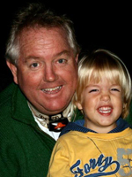
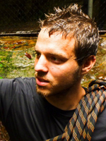
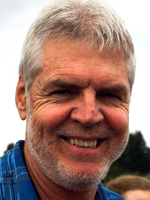
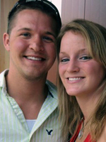

Crockett Roberts
has been involved with Pacific Challenge for 15 years, and currently lives in his homeland of Australia. As a PADI dive
instructor on the Great Barrier Reef, Crockett has over 6,000 hours under water. He has taught Scuba Diving courses in many
countries around the world. He holds an Australian Certification 4 in Teaching, Training and Assessment (TAE) and is a Level 2 Coach. As a Medic First Aid
Instructor (St John's MFAI) he is very experienced in medical emergencies. His classic Australian personality and sense of
humor is unforgettable and makes him an exceptional leader.

David Gooze
participated in the program in 2009 and joined the team in 2011. He graduated from the University of Oregon with a
degree in political science. Recently finished up a 10-month Americorps program, working with conservation work and
outdoor leadership in Massachusetts. He is trained in Wilderness First Responder and is a certified
Leave No Trace instructor.
Leaders

Dave Wright founder/director
He brings his love of the outdoors and vast experience to the program and trips he leads.
Dave's background in Environmental Studies and Tourism provides a strong interpretive emphasis
to our time in the lands down under. With his approachable, outgoing nature, he makes friends the world over.
Jinny Reitmann escape coordinator
Jinny has been with the Pacific Challenge Escape Program since its inception in 2003. She was
a participant on the classic Pacific Challenge trip in 2000 and has been working with the program ever since. Jinny is an
enthusiastic and organized leader and has a love for the outdoors and a thirst for adventure. She has extensive experience
in the outdoors and adventure travel. She currently has a bachelor's degree in Recreation and Leisure Studies, and
Recreational Therapy, along with a minor in Adventure Tourism. She also has a masters of Science degree with an
emphasis in counseling.

Noah Hoback
Joined the adventure team in 2008. He has a degree in recreational tourism
and a minor in adventure tourism, and is currently working on his masters in Outdoor Education and Adventure Leadership. For
the past 3 years he has been an assistant to the Outdoor Pursuits program at Winona State University. He has been a
rafting guide in North Carolina, South Carolina and Tennessee, and currently has his A license for skydiving and advanced open
water scuba certification. He is trained in Wilderness Medicine.

James Bystrzycki
participated in the program in 2009 and joined the team in 2010. He has a degree in business administration and is
currently working on his masters in Outdoor Education and Adventure Leadership. For the past 2 years he has been an
assistant to the Outdoor Pursuits program at Winona State University. He is a trained EMT first responder and an advanced
open water scuba certification.